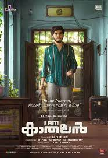

SPOTSTAR - GIRISH A.D

Girish A. D is a popular Malayalam film director, screenwriter, and actor known for his refreshing take on youth and romance in cinema. He hails from Chalakudy in Kerala and holds an engineering degree. Before entering mainstream cinema, he gained recognition through his short films, which showcased his talent for realistic storytelling and subtle humor. His directorial debut in feature films came in 2019 with Thanneer Mathan Dinangal, a coming-of-age romantic comedy that struck a chord with both young and older audiences. The film was a major success and established him as a strong voice in Malayalam cinema. He followed it up with Super Sharanya in 2022, which continued his exploration of college life and young love, further cementing his reputation. In 2024, he directed Premalu, a romantic comedy set in Hyderabad, which became a huge commercial hit and one of the biggest Malayalam box office successes of the year. That same year, he ventured into a different genre with I Am Kathalan, a cyber-thriller, showing his willingness to experiment. Girish is known for his collaborations with young actors and his ability to create authentic, relatable characters. His films are often light-hearted but rooted in real emotions and situations, making them widely appealing. He brings a sense of simplicity and charm to his work, avoiding exaggeration while still delivering entertainment. Through consistent storytelling and a strong grasp of youth culture, Girish A. D continues to be a significant influence in new-generation Malayalam cinema.
POPULAR FILMS


